Combined plan · docs and homepage · 5 Oct 2026
Built from your picks on the docs and homepage audit. You asked to see two things before they’re built, and both are below. That makes 5 PRs covering all 20 findings. Three can start now and two wait on you.
H3: on a phone, the header’s Download scrolls to the hero’s buttons. Below 640px it now goes to #download instead of starting the .dmg. The anchor sits on the block with the lede, both buttons and the Apple Silicon note, because landing on the button row alone cut the lede mid-line. From 640px up nothing changes.
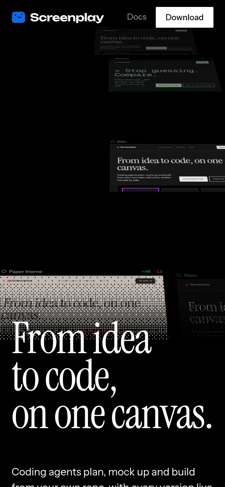
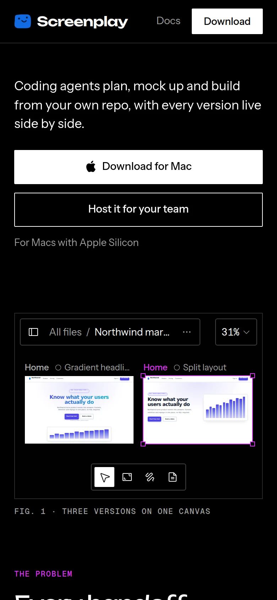
N2: something nicer for captions under a row of screenshots. Five rows use this (Mockups, Home and three on Frames). All three options put the captions on one shared line, so the shots can be different heights and the captions still line up.
Now
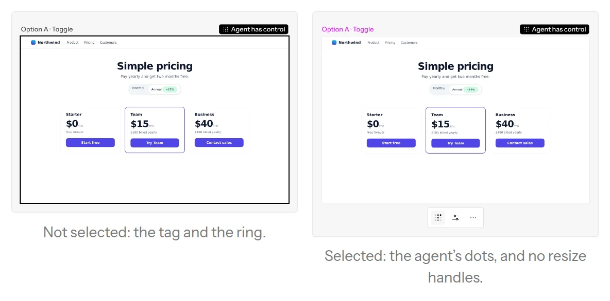
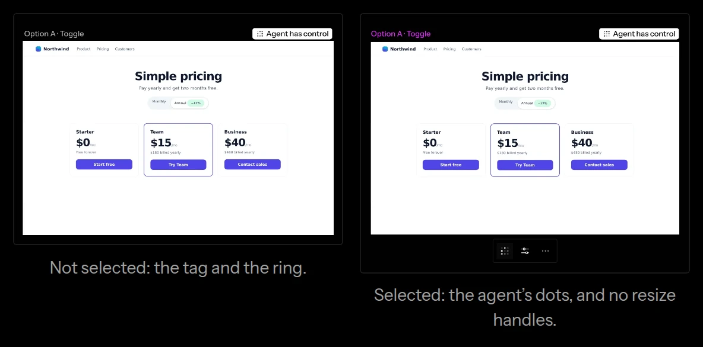
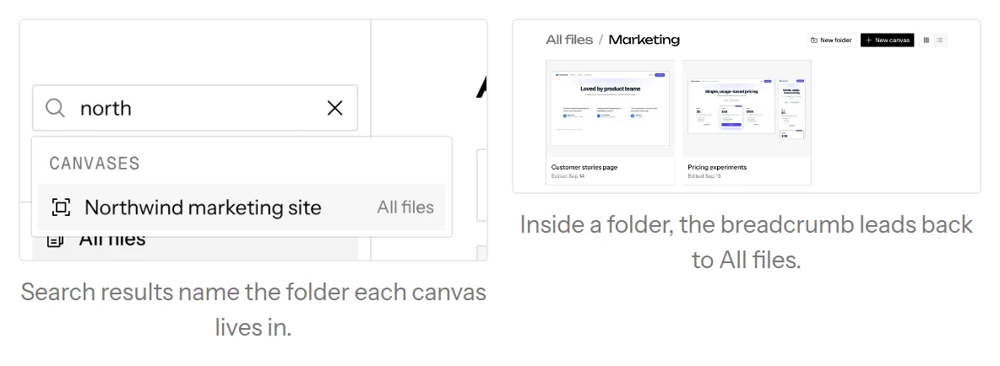
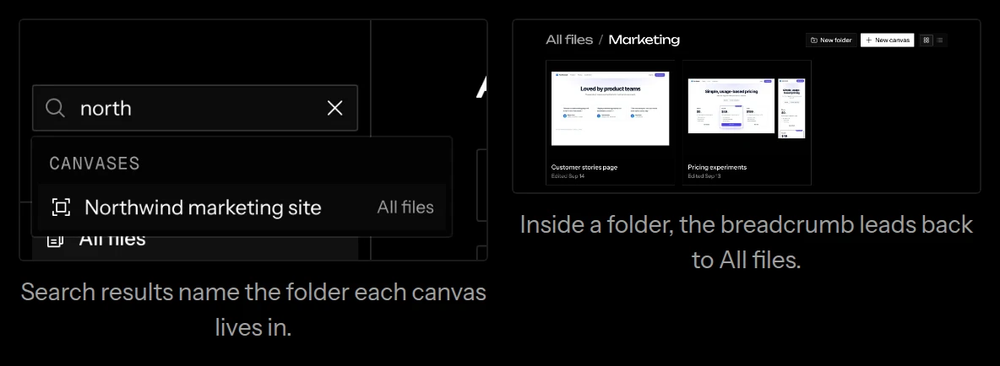
C: lettered 12px captions on one hairline Recommended
Each caption starts with a letter on a hairline that runs across the row. The space under a shorter shot looks like layout rather than a gap, and the text can say “in B”.
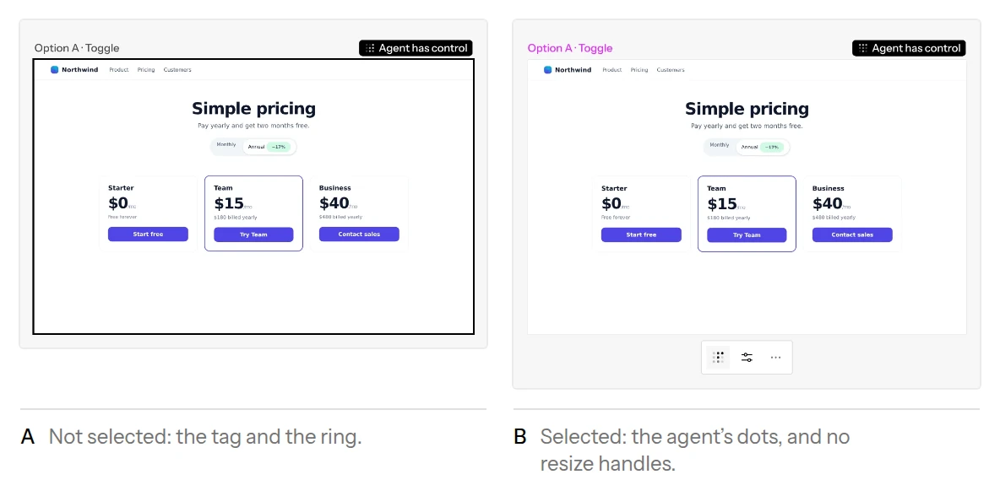
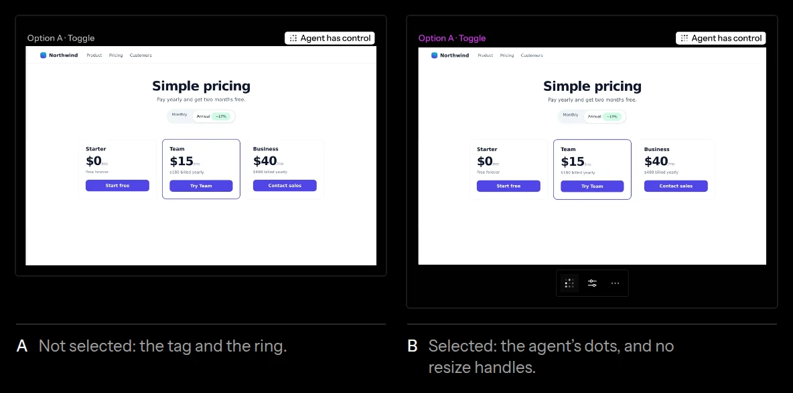
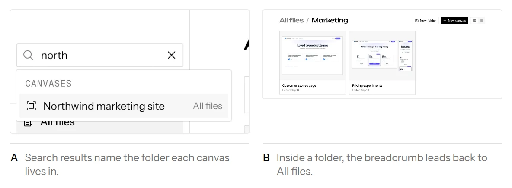
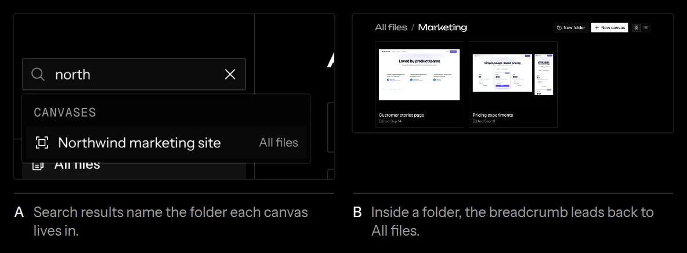
A: shared line, muted captions aligned left
The smallest change: the same shared line with no hairline or letter.
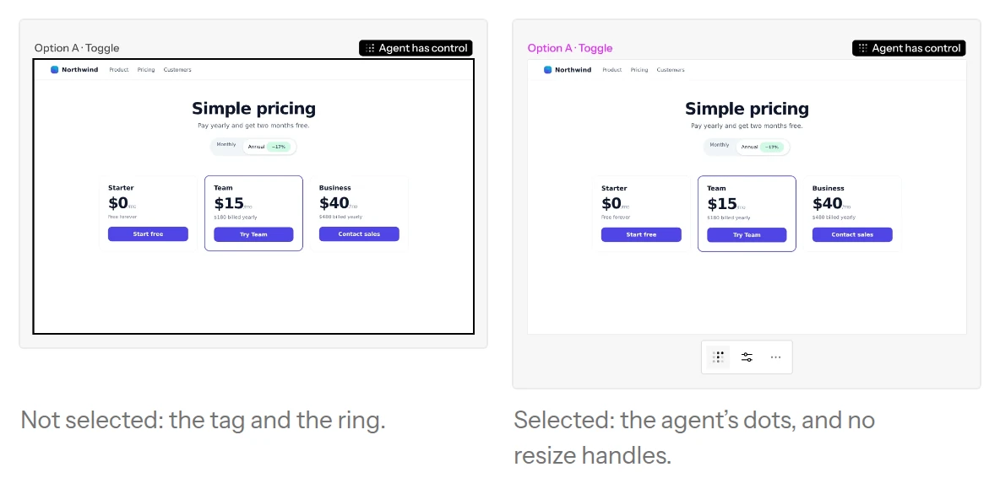
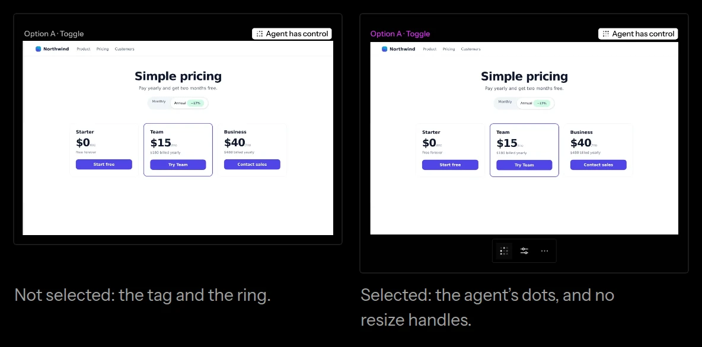
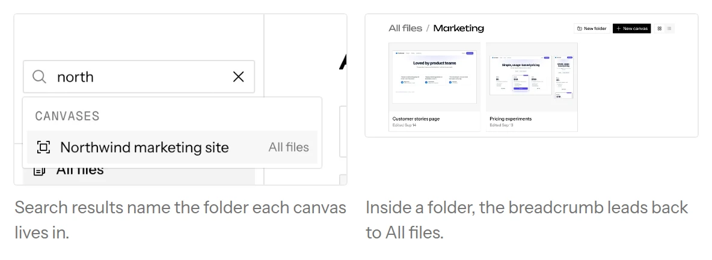
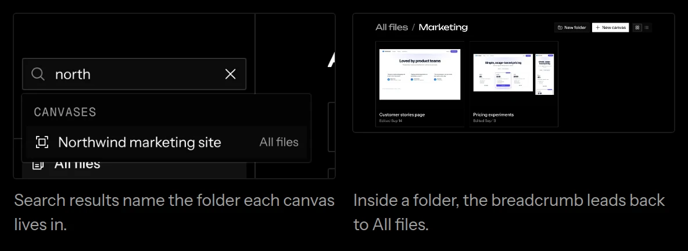
B: a muted 12px label above each shot
Labels end on one line and the shots start together. Single screenshots keep their captions below, so rows and single shots would differ.
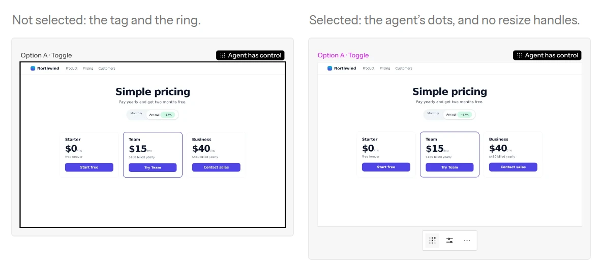
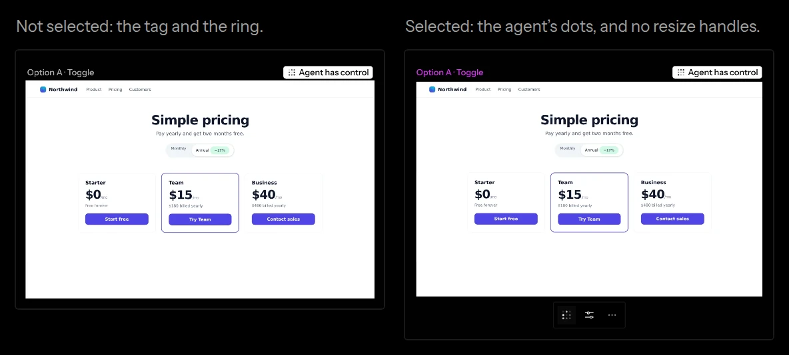
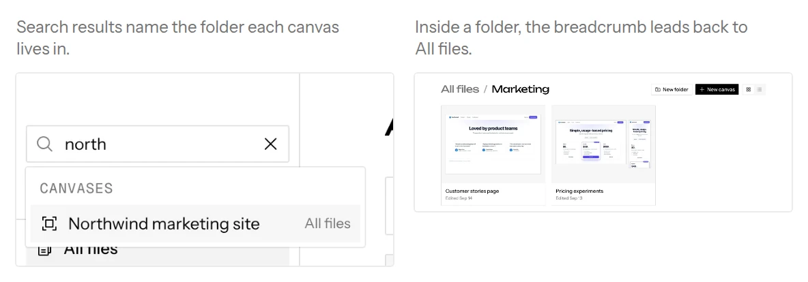
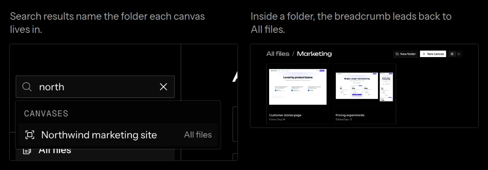
Starts from docs.patch without its N2 hunk. Main has moved since the audit: PR #1660 touched canvas.mdx and mockups.mdx, so those two hunks need reapplying by hand.
building/skills becomes skills after Files, titled “Skills”. The old URL redirects, and the seven docs pages that link to it are updated.docs-n2-option-<a|b|c>.patch.id="faq".homepage-h3.patch. It touches header.tsx and hero.tsx, so it rides after PR 4.